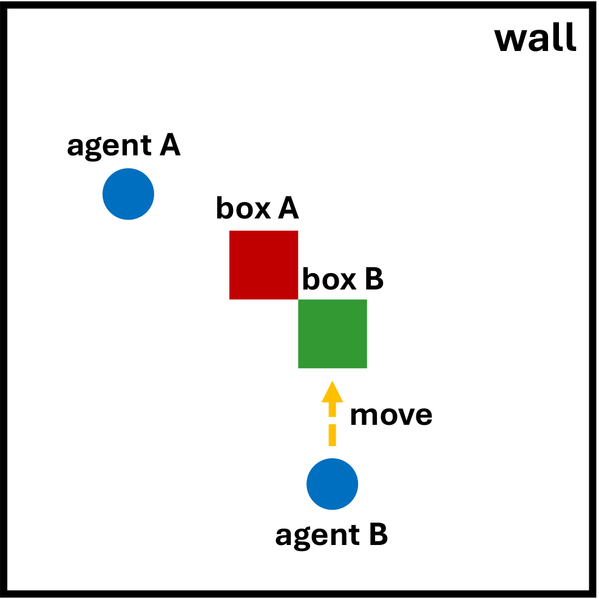
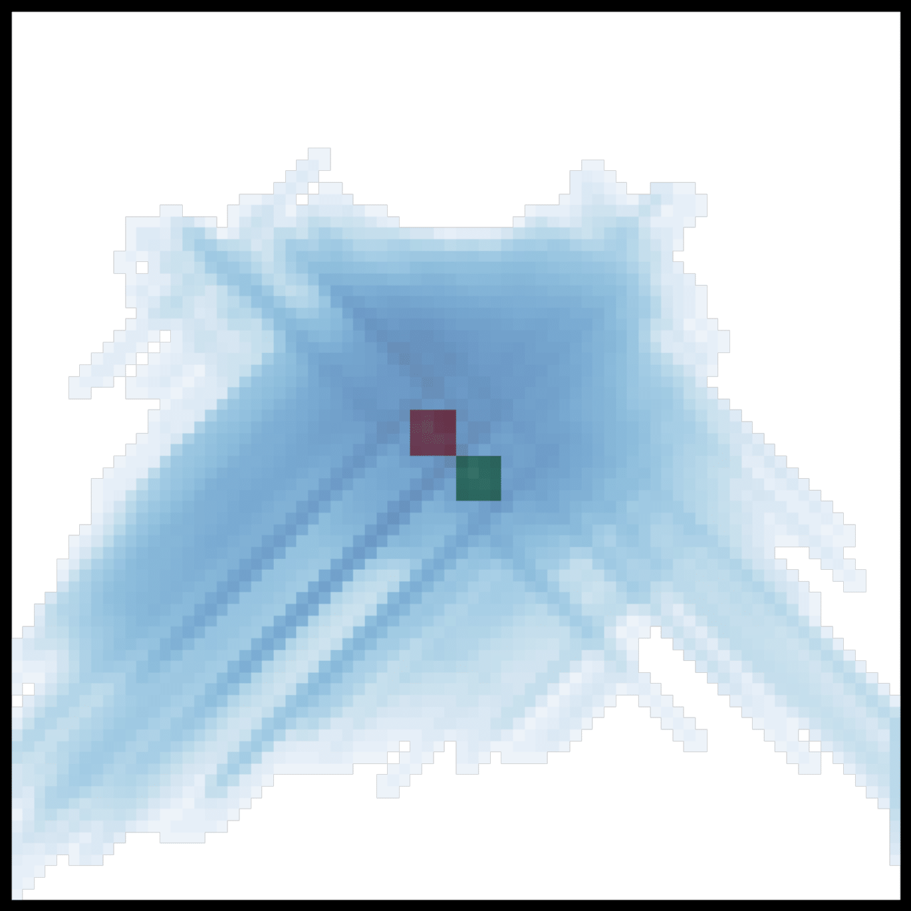
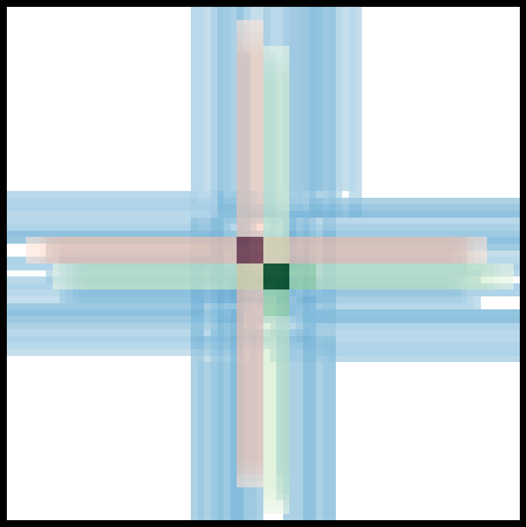
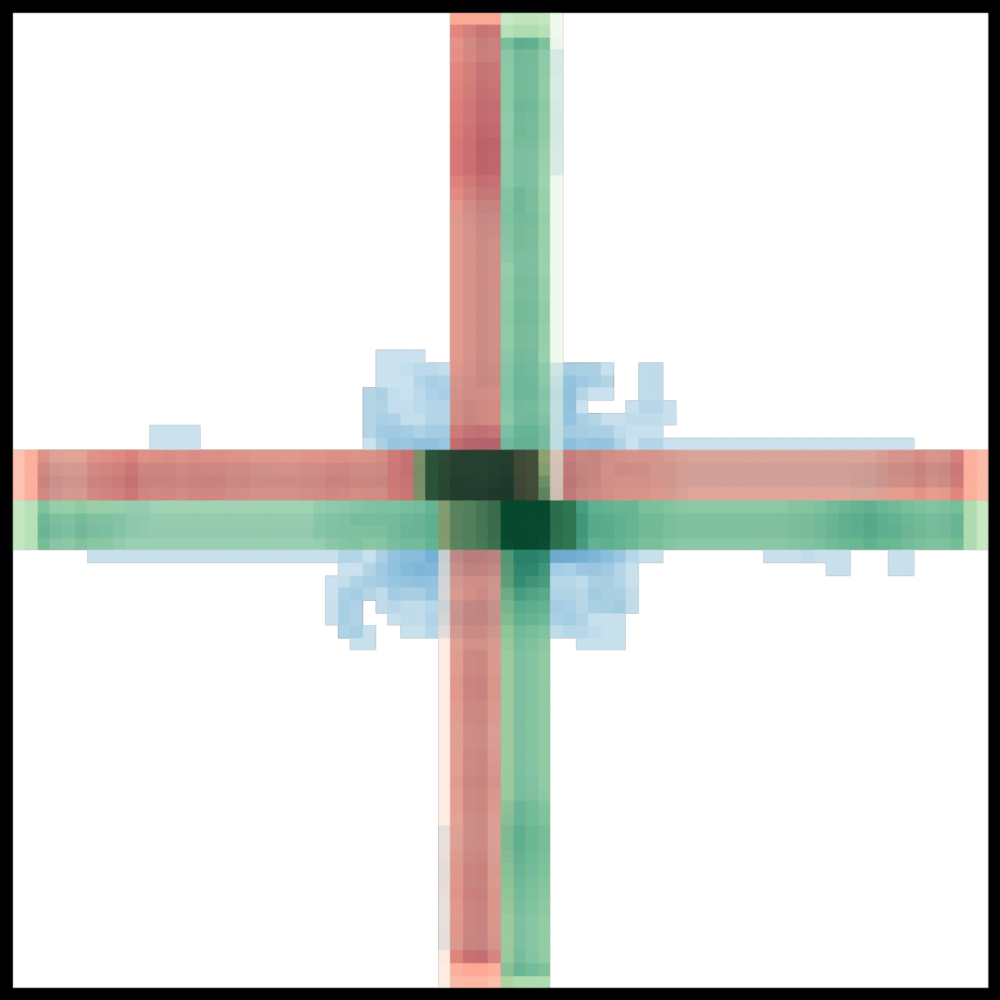

Better cooperation starts with where agents focus—and how long they sustain that focus.
THE CORE IDEAFocus together. Keep influencing.
A motivating example in Push-2-Box

01 The task

02 Vanilla QMIX

03 Agent focusing only

04FIM: AFI + SFI
Original panels from the paper. Push-2-Box requires agents to coordinate their pushing. FIM combines persistent joint influence with selective attention to under-explored state dimensions.
01 / OVERVIEW
Exploration needs coordination.
Sparse rewards tell agents little about how to work together. Even when each agent can change the environment, their influence can remain scattered.
FIM adds an intrinsic learning signal that directs agents toward under-explored parts of the state space and rewards sustained collective influence. It combines entropy-based state selection with eligibility traces, and can augment different multi-agent learning backbones.
Read the abstract +
Cooperative multi-agent reinforcement learning (MARL) under sparse rewards remains fundamentally challenging because agents often fail to concentrate their influence, leading to insufficiently coordinated exploration. To address this, we propose the Focusing Influence Mechanism (FIM), a framework that encourages agents to focus their influence on under-explored parts of the state space through an entropy-based criterion, while leveraging eligibility traces to enable multiple agents to consistently align and sustain their influence on the same parts of the state space when beneficial, thereby promoting coordinated and persistent joint behavior. By emphasizing under-explored regions of the state space, FIM facilitates more efficient and structured exploration even under extremely sparse rewards. Across diverse MARL benchmarks, FIM consistently improves cooperative performance over strong baselines.
Estimate the entropy of state transitions and give more weight to dimensions with limited observed variation under the current behavior policy.
PRIORITY
Under-explored state dimensions receive larger weights wd.
AFI
How to sustain it
Agent Focusing Influence
Estimate joint influence through counterfactual reasoning. Accumulate this influence with eligibility traces, encouraging the team to keep affecting shared targets over time.
PERSISTENCE
Repeated collective influence increases the trace etd.
↳ Together, SFI and AFI encourage focused, persistent cooperation under sparse rewards.
03 / RESULTS
Cooperation across challenging environments.
Performance curves from the paper, using sparse rewards.
@inproceedings{park2026focusing,
title={Focusing Influence Mechanism for Multi-Agent Reinforcement Learning},
author={Park, Yisak and Lee, Sunwoo and Han, Seungyul},
booktitle={Advances in Neural Information Processing Systems},
year={2026}
}